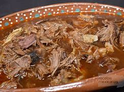
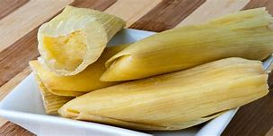
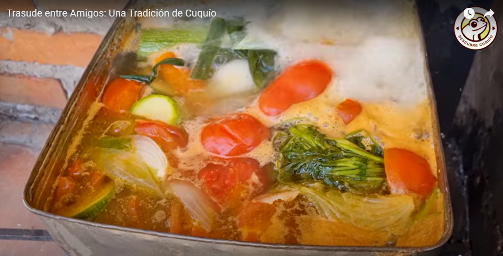
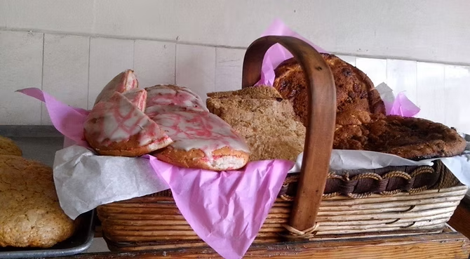
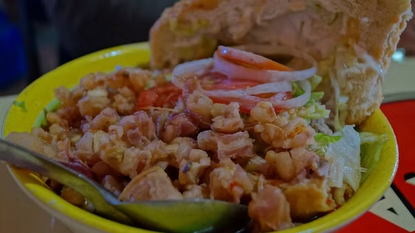

Birria de Chivo

Plato típico de la región, preparado con carne de chivo cocinada lentamente con especias tradicionales. Ideal para festividades y reuniones familiares.
Tamales de Elote

Hechos con maíz tierno y envueltos en hojas de elote. Dulces, suaves y muy populares durante las fiestas patronales.
Trasude

El trasude es un platillo q es como un caldo de pollo pero el pollo debe ser robado y el caldo muy muy enchiloso este platillo se preparaba despues de una borrachera cuando les daba la cruda con este platillo se la curaban ya q los hacia sudar demaciado.
Cotorras

Hace mucho tiempo abrió en Cuquío una panadería, su dueño era conocido como Don Juan Pólvoras y a su establecimiento acudían diariamente un gran número de personas que acostumbraban a disfrutar de tan exquisito producto, otras, general mente mujeres, aprovechaban sus visitas al dicho establecimiento para lograr cruzar un par de palabras con su romeo, que suspiraba al intercalar miradas mientras mordían una concha o un puerquito. Don Juan, aconsejado por la experiencia, comenzó a realizar pruebas, buscando la innovación y la mejor calidad para sus clientes, fue así como frente a los hornos ardientes de la panadería de Cuquío, nació un pan que gustaría mucho en toda la región, era de media luna, con relleno dulce y suave que dejaba satisfecho incluso a los paladares más exigentes. Fue así como surgió “La Cotorra” el pan tradicional de nuestro pueblo. De igual manera surgió el Huarache y la empanochada, piezas que debes probar si vienes a Cuquío.
Tortas en caldo de pozole.

El 12 de diciembre de 1955 Doña Romana inició un puesto de comida en lo que hoy es la plaza de la juventud, su especialidad era el pozole y las tostadas, ambos exquisitos, en este mismo lugar surgió un alimento muy típico de Cuquío, La torta en pozole, es un lonche abierto colocado sobre el plato, arreglado con la carne misma de ese platillo y bañado en abundante caldo de pozole. Hoy en día es obligatorio pasar por el puesto de doña Ana y Blanca Sánchez que se encuentra en el mercado municipal y donde se conserva al sabor típico de esta región.